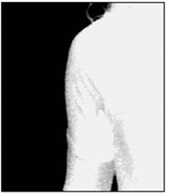
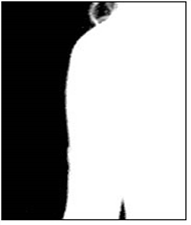
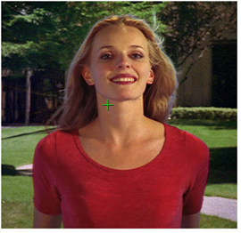

If there are dark regions in the middle of the mostly white foreground object, that is, if the key is not 100% in some portion of the targeted foreground, select Clean FG Noise from the operation dropdown menu. Use the same techniques as for Clean BG Noise, but this time sample the dark pixels in the foreground area until that area is as white as possible.
|
 |
 |
| Before foreground noise removal. |
After foreground noise removal. |
TIP: After sampling the backing screen color and finding that the edges of the foreground object look very good, you sometimes find that an area of the foreground object is transparent. This is due to the foreground containing a color that is close to the backing screen color. When this transparency is removed using the Clean FG Noise operation, the edge of the foreground object picks up a fringe that is close to the backing screen color and it is very hard to remove without sacrificing quality somewhere else on the image. To tackle this problem, you can enable hybrid render. For more information, see Actions Section.
These were the steps necessary to create a clean matte or key view of the image. With this key, the foreground can be composited onto any background image. However, if there is spill on the foreground object from light that was reflected off the background, a final operation is necessary to remove that background spill get a more natural looking composite.
For the fourth step in the Primatte operation, return the RGB view to the Viewer window by clicking again on the A keyboard key. This turns off the alpha channel viewing mode; the Viewer window again displays the RGB view with the background image (if you connected one to the Primatte node).
The sample image below has gone through the first three steps and has examples of spill. Notice the blue fringe to her hair and a blue tint on her right cheek, arm and chest.
|
 |
| Blue spill visible. |
|
|